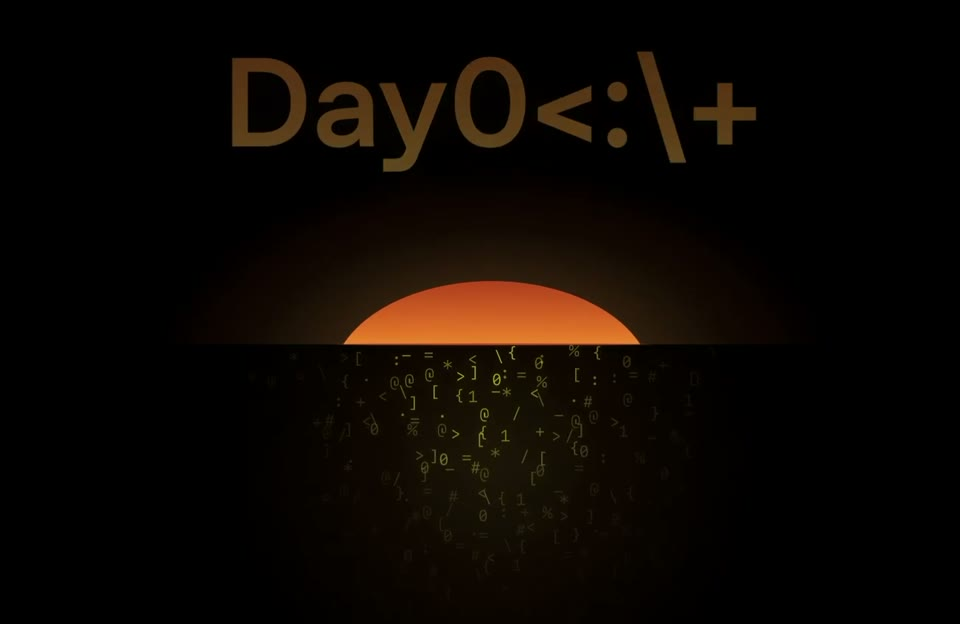
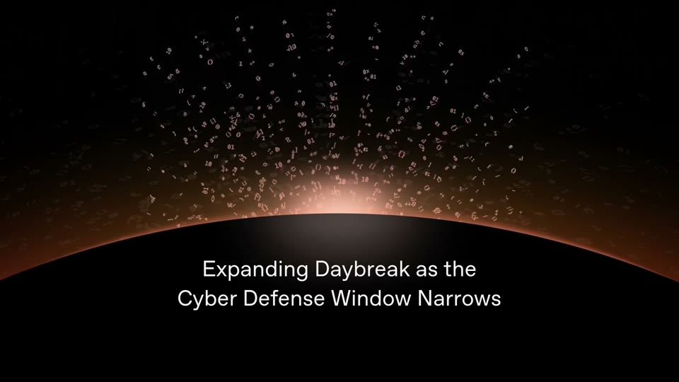
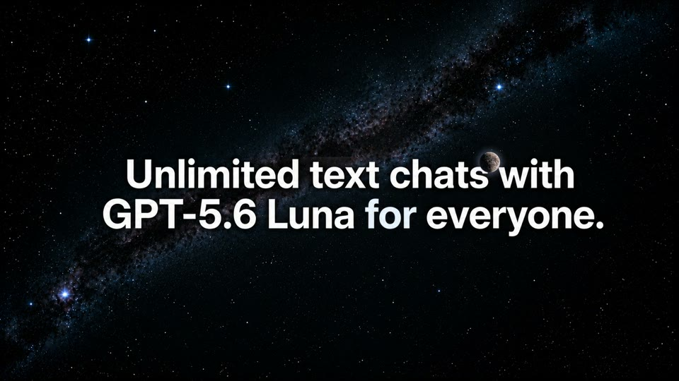

Light tells the time
Light is the story: night turns to dawn behind the product, a sun sits on a horizon, a moon drifts behind the headline. Time passes without a cut.






The rules
One continuous shot where the ground itself changes (navy #212838 → cream #FAF2E5 in 1.3 s).
Flat night skies (stars of 2–6 px, a flat moon disc with a soft glow) and a rising sun disc.
The product card restyles as its clock advances.
Bold rounded sans at 6–7% cap height, one headline per phase.
The music drops out before the logo.
For Kallo
A day of eating in 20 s: “8:12 AM oats” under a small sun on cream, “12:40 PM chicken rice”, “7:05 PM pasta” under the moon, the day’s total climbing, the iPhone at breakfast and the web at night.
A whole world with no people and no empty cream; it says “every meal, all day” naturally.
Few references (one film carries most of it), and the light story can slow the pace.
Films
OpenAI · Daybreak · 6M views
OpenAI · GPT-5.6 Luna for everyone · 5M views
OpenAI · Daybreak expansion · 2M views
Manus · Website Auto Publish · 56K views